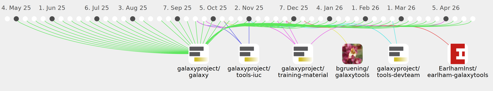

nsoranzo

Commits all-time: 8155
Commits last year: 386

(372)
- 2d3a181
- 4e33216
- b173bd4
- 81a16d3
- e565c7a
- 1504144
- 69d197e
- 6e52a56
- 7af682d
- 4eb94cd
- 9978004
- fd5102d
- 12ad482
- 0e7b0eb
- a11f77d
- 37116c3
- f81cc1b
- 237626e
- 9a682d4
- dad746e
- e975ca3
- ae711b1
- e82b950
- 0c4b85a
- 11fdad0
- 0e499dc
- be09082
- 10ace7b
- de8d456
- 52933ed
- 5e14d03
- f9384bb
- 6250c97
- f4229aa
- 167282f
- ca1cf0a
- dcd739a
- 0c07166
- 6ffdf84
- 36f3559
- a626b31
- 036e469
- d37c284
- c3a6bf4
- 8369bf5
- 6f02027
- 12a782b
- 24063e5
- ddd1803
- 3d3ad72
- 1a3edae
- 62c610c
- b02101b
- 94c43dd
- ef25132
- 031a859
- de1bb85
- 241fc3b
- 3f0f789
- 159cb46
- 0e1eb86
- 5cadceb
- e4aae94
- 0bad72a
- 7ffc2b7
- 11312a7
- 3a8a124
- 75f0618
- 05b467d
- fac8eed
- 1406a61
- 833ad06
- 1e95836
- a2018a5
- 4588a27
- 1e324c2
- 44e0d54
- 898c97a
- 330599c
- 437b39c
- db682e8
- 8e7bc62
- be2201f
- b798532
- 9bbd91d
- a55e4e4
- 3083b5e
- 2319271
- 96fbfce
- 866d1f9
- d47f11d
- 406c22e
- 76895fb
- dbcde76
- 1332eb1
- 4984523
- ed5b002
- 4a4ead2
- ad45629
- ad6fbe5
- 14fc332
- 0611465
- 11bb4b4
- 2317db7
- c286930
- dcb6f06
- 659e87f
- dc9e078
- f33c5a4
- 6fbd2ab
- 466a7a7
- 053ca51
- edf06c5
- 1fef07c
- 7c143ce
- 501c9e3
- 1d64120
- 37a50cc
- 0629908
- 6492f07
- 7463439
- 534010a
- f237455
- 33011b2
- a6fd343
- 6ff6b27
- 788c870
- 127e461
- 40b3151
- 1e9205a
- 42eda1f
- 7905be9
- cb9bce4
- 6a83432
- e58caaf
- 70c5648
- 7f6adf0
- 6fe7c5f
- b56640d
- 55a9b9d
- 5ac64c8
- 4b4a649
- 4c4ed10
- 94de628
- de2d36a
- 043d99c
- 4cf305c
- b191360
- 7ba9471
- 8cdca0f
- 028630a
- 9b70b75
- 7ab7475
- bd9a169
- 7135560
- 6ef6fc9
- 6d068ca
- 94ebebf
- 3ea8de4
- 53bf8ce
- 761a8d9
- 132ea2b
- 0a7de5c
- ef294f9
- b2076ee
- 1174bbe
- 80701f4
- 4e254a6
- bf19bc1
- 8beef0b
- 3817559
- 62eadc8
- 0fb77c8
- df19283
- 316aa75
- 70b5811
- 114ab57
- d2aea97
- 4ad69de
- bcca24b
- 08d42ea
- 3845d5e
- 25d6876
- 88d3849
- 7cfb10e
- 541f4c0
- c1439a1
- ee2ef18
- ece66de
- 2fd90d1
- 37905ec
- a782d24
- 9524be3
- 695e86e
- e61f2e8
- 6948206
- 135f47f
- 4ac6a1e
- eb00875
- 0ae7b23
- 1b0b82f
- 9a658ae
- 49f820d
- 3216bc0
- af6e28d
- 269ec40
- ddc1cc1
- f1a4b56
- 945bd5d
- e0ee749
- 5c7b6b6
- e8e1b4a
- 67fcb49
- fdd9cb0
- b100c1e
- 6546205
- 1a0a706
- 359bcfe
- 9191eee
- 90b5251
- c1ce4d4
- 46d7ebb
- c222fdd
- bc25017
- 47e9bcb
- 51b723b
- 0c8666f
- 203573a
- c6aa471
- aeeef1d
- 236765d
- fdb61ac
- a03324c
- be29cca
- af9b9ef
- c778a2a
- bf6fadb
- c065fa9
- e85de5d
- ac480e7
- f0420d7
- 51e3ec6
- 764dbb3
- 5b4d8a1
- 8d9fc6b
- 30d2443
- d3c369f
- 440fbd6
- ed336d8
- fd5ca34
- 0b4fee5
- 1f8260d
- cb0e3ed
- f6c6a37
- 7154daf
- dd67654
- 73c617f
- 136747e
- e496652
- 79a4ebd
- e432488
- 1224c65
- 178a1ef
- 97a5e5d
- 31095a0
- b0b9bbe
- c27e2fd
- 80a99f5
- 01512cb
- 70e1fad
- 1cbfbc8
- f6200f8
- dd9ca09
- 385a586
- 90cbbfa
- 6dc681d
- 03457df
- 612d698
- 6a24eaa
- 3b4cfed
- 70bea1b
- 63b92e7
- cfc31bc
- ceef7ca
- 4e56b47
- 19811a6
- 9f78065
- 3f9cdb4
- aef57db
- 2cedc9a
- ed07d87
- 051c5ab
- febd6f9
- b2c9f19
- d79d872
- d866927
- 93078d9
- 0f06c9b
- 80ce8ad
- 1fadd2f
- b97ede7
- 1f223d0
- 46c1dcd
- 242c533
- 6004c81
- f7c5769
- 84742ee
- 95c0950
- eb7d89d
- 94593bd
- ff9470e
- 2e11959
- d24ae97
- 5920cab
- abef2e8
- 6929fbb
- fe4589d
- 1b54c0b
- aceaa11
- f382305
- 09d8695
- c0a7cdc
- 26a4e14
- 9c486e4
- 7e90bcb
- 916890f
- 78aa6f9
- 0e6d628
- 116a990
- 01e80fc
- 0695bab
- d09d0b3
- e4d2fb7
- b5a25f0
- ff941b2
- 4d211a3
- 3667179
- d627efb
- e871f7e
- 2666c2c
- 8c4c296
- 7d25278
- b39c3b2
- e5f0a8c
- c843938
- 0991d59
- 58496b9
- 9e266d4
- bbed4a8
- 5544eff
- 3c82972
- 7823472
- 18dca18
- 5394401
- 5561c4e
- 9e2a3cc
- 4e650b4
- c67ffe8
- 9e725e8
- 1bf1d59
- 614ecbb
- 3546ae5
- b1cf76c
- 2c3c416
- 0f5df5f
- 4371398
- 4c44920
- 0d4ec88
- 8f0465f
- 4fa092c
- 184c1a7
- 595066d
(5)
(5)
(3)
(1)